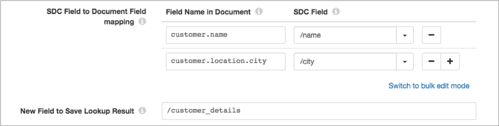

MongoDB Lookup
Supported pipeline types:
|
For example, you have multiple department documents in MongoDB that list the employees in the department. You configure the processor to use the department_ID field in the record to look up a department document, and pass all values from the matching document to a new department_employees field in the record.
When you configure the MongoDB Lookup processor, you define connection information, such as the connection string and MongoDB credentials. You define the fields to look up and the field for the return values.
When a lookup results in multiple matched documents, the MongoDB Lookup processor can return values from the first matching document or return values from all matching documents in separate records.
To improve performance, you can configure the processor to locally cache the document values.
You can optionally configure advanced options that determine how the processor connects to MongoDB, including enabling SSL/TLS for the processor.
Field Mappings
When you configure the MongoDB Lookup processor, you define the document fields to look up in MongoDB. You map these document fields to fields in the record that contain the values to look up.
<embedded document>.<field name>.<embedded field name>
/<field name>You can define multiple field mappings. The processor uses the configured field mappings
to generate and run a find() query in MongoDB.
After defining the field mappings, define a new list-map field to store all values from the returned document.
{
_id: 123,
customer: {
name: "Ed Martinez",
status: "gold",
phone: "123-456-7891",
location: {
city: "San Francisco",
state: "California"
}
}
}Your pipeline reads from an origin that contains customer names and cities, but you want
to enrich that customer data with the customer status and phone number. When you
configure the processor, you map the customer.name and
customer.location.city document fields to the values stored in the
name and city fields in the record. To store the
lookup result, you define a new field named customer_details. The
following image shows the configured field mappings and the result field:

When you run the pipeline, the processor uses the field mappings to generate and run a
find() query in MongoDB. The processor passes all values from the
returned document to the new result field.
Lookup Cache
To improve pipeline performance, you can configure the MongoDB Lookup processor to locally cache the document values returned from MongoDB.
The processor caches values until the cache reaches the maximum size or the expiration time. When the first limit is reached, the processor evicts values from the cache.
- Size-based eviction
- Configure the maximum number of values that the processor caches. When the maximum number is reached, the processor evicts the oldest values from the cache.
- Time-based eviction
- Configure the amount of time that a value can remain in the cache without being written to or accessed. When the expiration time is reached, the processor evicts the value from the cache. The eviction policy determines whether the processor measures the expiration time since the last write of the value or since the last access of the value.
When you stop the pipeline, the processor clears the cache.
Credentials
Based on the authentication used by the MongoDB server, configure the processor to use no authentication, username/password authentication, or LDAP authentication. When using username/password authentication, you can also use delegated authentication.
By default, the processor uses no authentication.
- Connection string in the MongoDB tab
- Enter credentials in the connection string in the MongoDB tab.
- Credentials tab
- Select either the Username/Password or LDAP authentication type in the Credentials tab. Then enter the username and password for the authentication type.
If you enter credentials in both the connection string and in the Credentials tab, the Credentials tab takes precedence.
Read Preference
You can configure the read preference that the MongoDB Lookup processor uses.
The read preference determines how the processor reads data from different members of the MongoDB replica set.
- Primary - Requires reading from the primary member.
- Primary Preferred - Prefers reading from the primary, but allows reads from a secondary member.
- Secondary - Requires reading from a secondary member.
- Secondary Preferred - Prefers reading from a secondary, but allows reads from a primary when necessary.
- Nearest - Reads from the member with the least network latency.
BSON Timestamp
When processing data from MongoDB version 2.6 and later, the MongoDB Lookup processor supports the MongoDB BSON Timestamp data type.
<BSON Timestamp field name>:Timestamp(<timestamp>, <ordinal>)The MongoDB processor converts the BSON Timestamp to a map as follows:
<BSON Timestamp field name>{MAP}:
Timestamp{DATETIME}:<UTC timestamp>
Ordinal{INTEGER}:<integer ordinal>(1485449409, 1), is converted to the following Transaction
map field:
"Transaction":{
"Timestamp":Jan 26, 2016 14:50:09PM
"Ordinal":1
}Enabling SSL/TLS
You can enable the MongoDB Lookup processor to use SSL/TLS to connect to MongoDB.
Configuring a MongoDB Lookup
Configure a MongoDB Lookup processor to perform lookups in MongoDB.